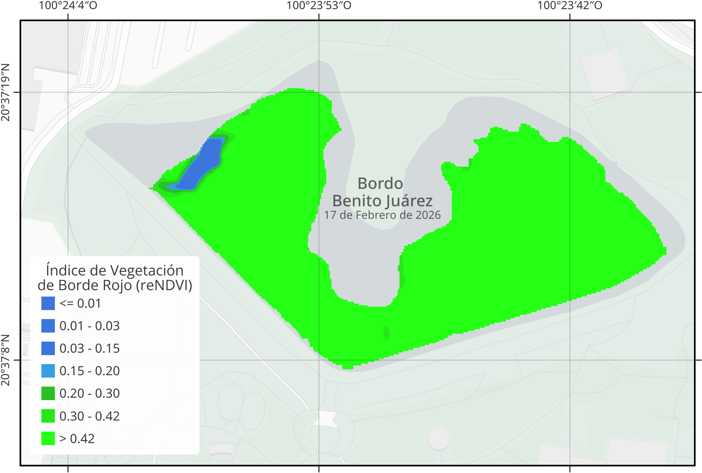
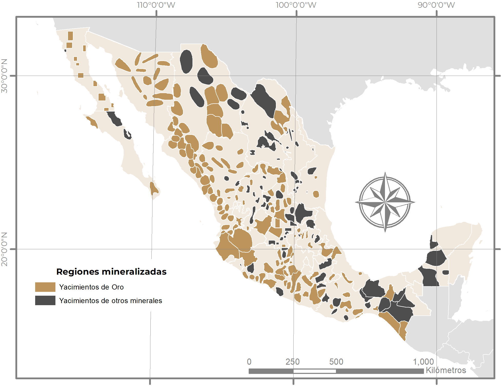

Neo-Cartografía · MX
Drones · GIS · Machine Learning
Inteligencia espacial
Somos la consultoría más cool de México. Hacemos que el territorio hable con datos: drones, análisis geoespacial e inteligencia artificial aplicada al mundo real.
Lo que hacemos
01
Generamos información precisa del terreno con dron profesional: ortomosaicos, modelos digitales de elevación, curvas de nivel y nubes de puntos. Ideal para obra, predios, bancos de material, proyectos urbanos y levantamientos donde necesitas medir, comparar o documentar el sitio sin depender solo de recorridos manuales.
02
Detectamos variaciones en vigor vegetal, estrés hídrico, posibles plagas, problemas de nutrición y zonas críticas mediante imágenes RGB y multiespectrales. El objetivo no es solo “hacer mapas bonitos”, sino ayudar a decidir dónde actuar primero, cuánto intervenir y cómo ahorrar recorridos, agua o insumos.
03
Convertimos información urbana, ambiental y socioeconómica en diagnósticos territoriales claros para planeación, gestión pública y toma de decisiones. Trabajamos con expansión urbana, aptitud territorial, infraestructura, movilidad, uso de suelo y análisis espacial para entender hacia dónde crece una ciudad y qué riesgos implica.
04
Integramos datos físicos, ambientales, urbanos y sociales para identificar amenazas, exposición y vulnerabilidad en el territorio. Generamos cartografía y diagnósticos útiles para municipios, consultoras, desarrolladores y equipos que necesitan anticipar riesgos antes de construir, invertir o intervenir.
05
Convertimos datos crudos en herramientas que sí se usan: modelos, dashboards, clasificadores, pipelines automatizados y sistemas de monitoreo. Trabajamos desde la limpieza de bases hasta la detección de patrones, predicción, clasificación de imágenes y análisis operativo.
06
Capacitamos equipos en QGIS, cartografía, análisis espacial, drones y Python aplicado a datos. Este servicio funciona como puente hacia una pestaña específica de cursos, con temarios, duración, nivel, modalidad y ejemplos de resultados.
Formación
Taller · Cartografía · Visualización
Taller práctico para transformar ideas, datos y lugares en mapas visuales. No necesitas experiencia previa.
Mapa interactivo
Experimento audiovisual con la red ferroviaria de París: Leaflet, Web Audio API, datos PRIM/IDFM y visualización en tiempo real. Por ahora corre en modo demo mientras llegan los GeoJSON y los samples finales.
Equipo
No es un dron de hobby. El Mavic 3 Enterprise es equipo profesional con cámara principal 4/3 CMOS, zoom 56x, sensor térmico opcional y capacidad de operación RTK para precisión centimétrica.
Solicitar levantamientoPortafolio
Percepción remota · ML · Drones · Mayo 2026
Caso de estudio para estimar la cobertura de Eichhornia crassipes con Sentinel-2, reNDVI y validación independiente con DJI Mavic 3 Multispectral. El flujo combina Google Earth Engine, Python, clasificación por umbral automático y cartografía lista para decisión pública.
Explorador interactivo · Lirio acuático

Cobertura de lirio · serie temporal
Área total: 10.71 ha · Fuente: Sentinel-2 MSI L2A + DJI Mavic 3 Multispectral · reNDVI = (NIR - Red Edge) / (NIR + Red Edge)
Investigación territorial · Minería · Riesgo
Línea base AICOM sobre crimen organizado, minería y riesgos ambientales. El trabajo convirtió registros por estado y municipio, yacimientos, MOAPEs y presencia de organizaciones en cartografía analítica para lectura territorial.
Explorador de mapas · AICOM

Yacimientos mineros · capa de contexto territorial
Data Science · Protección Civil
Diagnóstico geoespacial para priorizar municipios con exposición territorial, vulnerabilidad e indicadores de presión urbana/ambiental. La lógica del proyecto fue pasar de tablas dispersas a una lectura de riesgo accionable.
Municipios: Chicoloapan, Estado de México · Puebla, Puebla · Santa Catarina, Nuevo León · El Marqués, Querétaro
El equipo
Somos un equipo de mentes espaciales con presencia en 4 estados de la república mexicana. Nacimos de la idea de que la cartografía no debería ser aburrida ni inaccesible.
Del lado técnico trabajamos con machine learning aplicado a datos geoespaciales: clasificación de imágenes satelitales, análisis de redes urbanas, modelos predictivos e inteligencia espacial para decisiones reales.
También somos comunidad: ya llegamos a 28K seguidores en Instagram. Los mapas que hacemos llegan a la gente.
Trabajemos juntosStack técnico
Equipo Cartografunk
Spatial Lead
Dirección · GIS · ML · Estrategia
Data Engineer
GIS · R · Web
Piloto / Topógrafo
Operaciones de dron · Topografía
Data Analyst
Procesamiento · Visualización
Environmental Scientist
Research · LLM · Environmental Science
Legal Researcher
International Consultancy · Derecho